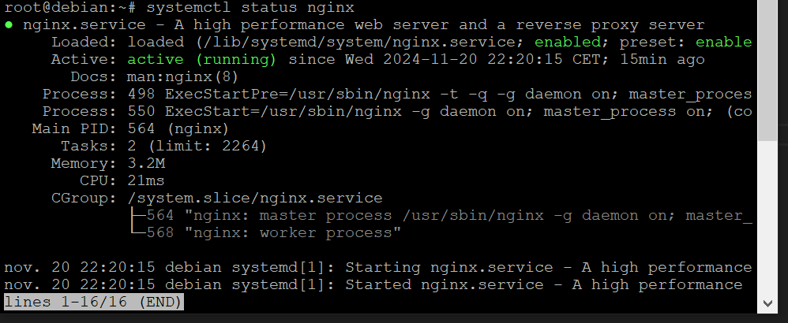

Nous allons voir aujourd'hui comment utiliser un ordinateur comme serveur avec XAMPP (sur Windows) et dans une seconde partie, comment mettre en place une solution avec Nginx sur Debian en utilisant une VM pour l'exemple.
Première partie avec XAMPP :
Normalement, vous avez déjà tous XAMPP d'installé sur votre machine :
Vous allez démarrer XAMPP et Apache en cliquant sur "Start" :
Une fois votre serveur démarré, vous allez récupérer son IP dans le CMD :
Vous allez vous/ou votre collegue connecter à l'ip depuis un autre ordinateur qui est sur le MEME RESEAU que le serveur XAMPP :
En saisissant l'IP récupéré précedement dans le CMD avec le bon répértoire ou se situe votre site !
Et voila, votre serveur est désormais accessible sur le réseau local de votre entreprise ou lycée !
Pour y accèder depuis l'exterieur, il vous faudra ouvrir les ports 443 et 80 de votre routeur fournit par votre FAI.
Deuxième partie avec Nginx en utilisant Debian :
Je part également du principe que vous avez installé Debian sans l'interface visuelle et avec le SSH de configuré pour l'accès root via Putty.
Dans le cas contraire voici une vidéo explicative : Vidéo pour Installer Debian
Nous allons ouvrir Putty et saisir l'IP de Debian pour s'y connecter a distance :
Une fois connecté, nous allons installer Nginx qui sera le serveur web :
Nous allons d'abord mettre à jours la liste de paquet avec :
Une fois la liste à jour, on vas installer Nginx :
Nous allons saisir nginx -v pour vérifié si l'installation à réussie :
La commande suivante va vérifié si Nginx tourne corectement :

Enable va servir à démarrer Nginx a chaque démarrage de Debian :
GG, Nginx devrait fonctionné parfaitement comme ci-dessous :
Nous allons maintenant ajouter votre site sur le serveur !
Ouvrez WinSCP ou FileZilla si vous êtes sur macOS :
Et saisissez les informations de connexion (IP, login et mdp)
En cliquant sur connexion vous serrez ici dans le répértoire Debian :
Double cliquez sur le seul dossier qui vous mettra a la racine de Debian et allez dans le dossier "var" :
Une fois dans "var" cliquez sur "www" et sur "html" et mettez vos fichier de site web ici :
Exemple avec Royal Tacos
Après avoir mis votre site web, saisissez l'IP de Debian et votre site sera là à la place de la page par défaut de Nginx* :
*Sauf si votre fichier ne s'appelle pas "index.html" / Exemple avec Royal Tacos :
Réclamation : searcharea.france@gmail.com / COPYRIGHT L'Area